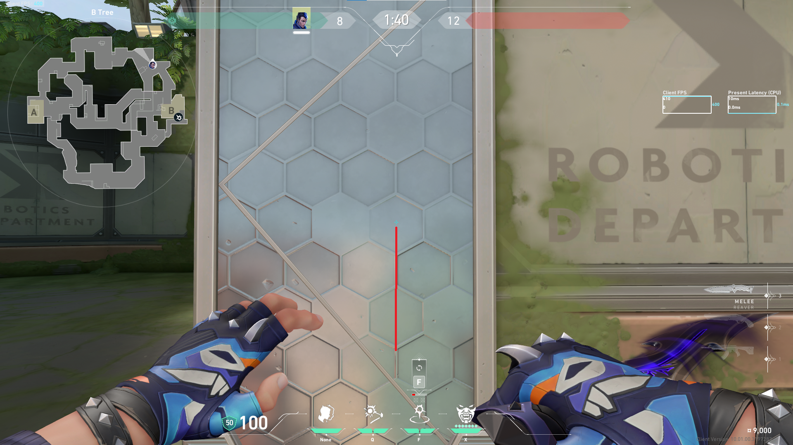
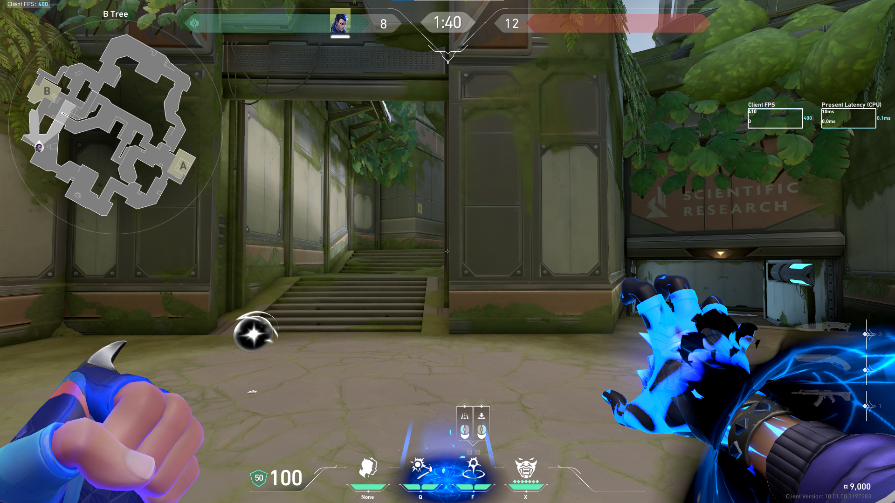
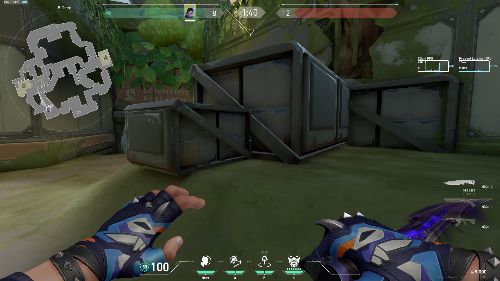
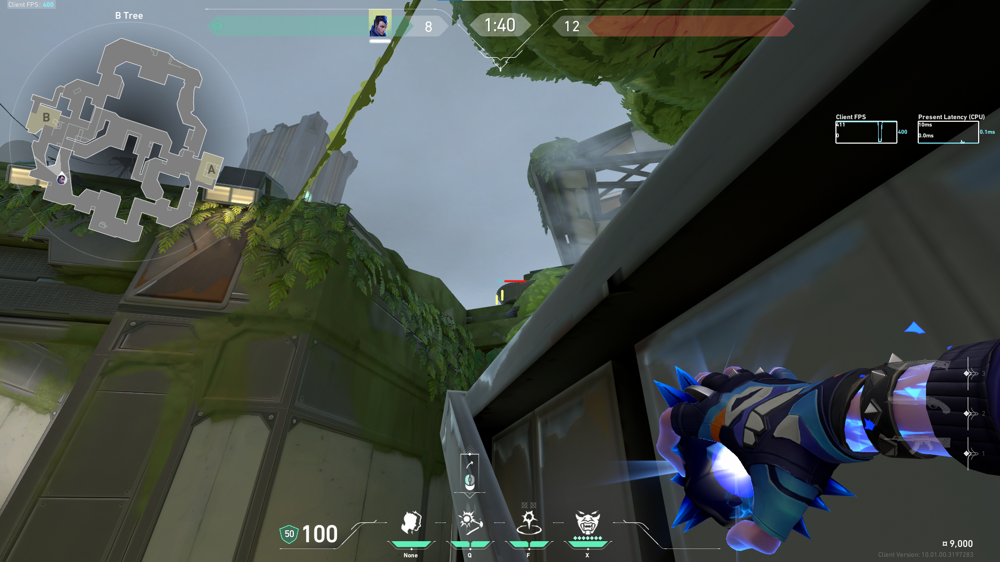

Bサイトへのセットアップ

赤線に合わせて張り付く

赤線の少し左に合わせる

角に張り付く

縦軸は赤線に合わせる、横軸は黄線の中なら恐らくミスしない
開幕Bアーケードへのセットアップ

aimしている角に合わせる(斜めになってるので少し合わせづらい)

赤線にaimして大体フリーズタイム3秒前にTpを出す(3秒以上前にTpを出すとスタックする可能性がある)

赤線が重なる位置にaimを合わせ、1分37秒にフラッシュを出して爆発するタイミングでTpする

大体この位置にTpする